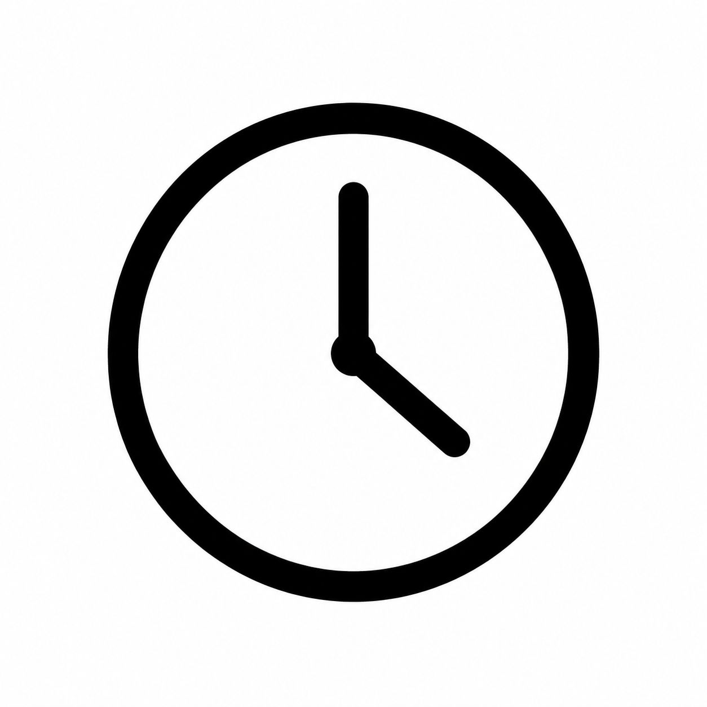
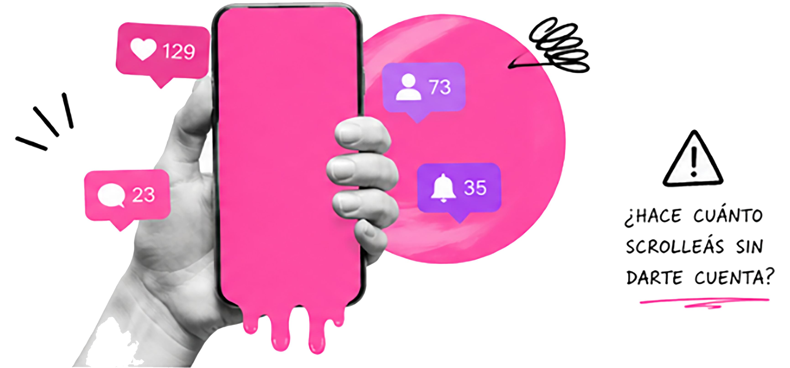
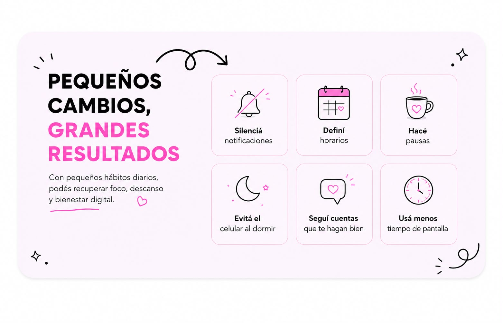

Definí horarios
Elegí momentos específicos para usar redes y evitá entrar por impulso cada vez que desbloqueás el celular.
Las redes sociales forman parte de nuestra vida cotidiana, pero muchas veces las usamos sin cuestionarlo. Este manual busca ayudarte a entender qué hay detrás de ese uso constante, reconocer hábitos que pueden estar afectándote y empezar a generar cambios simples. Las redes no son el problema, el desafío es cómo las usás.
Descubrí más

No se trata de dejar las redes sociales, sino de aprender a usarlas de una manera más consciente. Cambiar algunos hábitos puede ayudarte a recuperar tiempo, concentración y bienestar.
Ver cómo mejorar

Elegí momentos específicos para usar redes y evitá entrar por impulso cada vez que desbloqueás el celular.

Silenciar notificaciones innecesarias puede ayudarte a concentrarte mejor en tus actividades.
Intentá dejar el celular lejos antes de dormir para mejorar tu descanso y desconectar la mente.

Podés empezar con acciones simples y realistas, adaptadas a tu día.